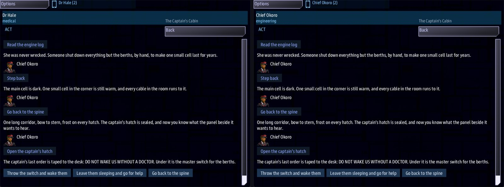

Class 3, Lecture 6 - Checkpoint: a short boarding quest¶
What you will have at the end¶
One away scene of your own, about ten minutes long, that any crew can finish. Six places. Five things to find out. A hatch that opens when the party knows three of them. Two endings, and each ending hands the ship a different quest. Two of your crew go aboard with a story of their own.

Dr Hale (left) and Chief Okoro (right) in the captain's cabin: the captain's last order, and the two endings, Throw the switch and wake them and Leave them sleeping and go for help, on both handhelds.This lecture teaches almost nothing new. It gives you a way to plan a scene, and five checks to make with a pencil. You need the pencil because lint checks your spelling. It does not walk through your rooms.
You will rewrite two sections of mission.amd, add two quests and rewrite a third. You
will not touch story.mast.
The video¶
About 6 minutes. Subtitles are available in the player.
Before you start¶
- Your mission from Lecture 5.
sbs lint MyBoardingsaysclean. - A sheet of paper and a pencil.
- A Helm console to fly with, and as many more as you can manage: Engineering, then Science.
- A copy of your
mission.amdfrom Lecture 5, kept outside the mission folder. You are about to delete your practice rooms. Lint reads every.amdfile inside the mission folder, and you want it reading one.
You also need a third person on your crew roster. Mine is at Helm, and his job is a word I
invented. If you added someone of your own in Lecture 2's exercise, keep them and read
quartermaster as your word. If not, add this record below Dr Hale now:
### [Mr Pell](pell)
---
Console: helm
Face: terran_male
Roles: quartermaster
Skills: quartermaster 3
---
The scene in this lecture is mine. Yours will have your own rooms and your own story. Follow mine once, exactly, then do the exercise on your own.
Step 1 - Three sentences¶
Before any rooms, write three sentences on your sheet of paper.
| Sentence | Mine |
|---|---|
| The question the scene asks | Why is the hulk drifting with nobody at the controls? |
| The answer, which the party finds in pieces | Her crew put themselves to sleep, to wait for help that never came |
| The choice the party makes at the end | Wake them now, or leave them asleep and fetch a doctor |
The pieces of the answer become your readings. The choice becomes your two endings. If you cannot write the third sentence, you have a tour, not a scene.
Step 2 - The beat sheet¶
A beat sheet is a list of how much of everything you are going to write. These numbers make a scene of about ten minutes.
| What | How many | Mine |
|---|---|---|
| Places the party walks between | 5 to 7 | 6 |
| Readings for a job, one for each person on your roster | 2 or 3 | 3 |
| Readings for a skill | 0 or 1 | 1 |
| Checks | 1 | 1 |
| Facts to find, in all | 4 to 6 | 5 |
| Facts the locked door asks for | No more than your job readings | 3 |
| Side stories | One for a person, at most | 2 |
| Endings | 2 | 2 |
| Words on a full party's page by the end | About 600 | 603 |
| Choices pressed, from arriving to an ending | 14 to 20 | 14 at the least, 16 for the worst crew, 20 to read everything |
The last two rows were counted on my scene by a script that pressed every choice. Nobody has timed a real crew. My guess is half a minute for each press: someone reads the line aloud, and the party agrees what to do. You will time your own crew in Step 11.
Step 3 - The places¶
Draw your places as a list, with one room in the middle that all the others hang from.
Three rules for the drawing.
- One room is the middle. Every other place leads back to it. The party is never more than two presses from the middle.
- Every room has a way back with no
if. You will check this with a pencil in Step 9. Return to the shipgoes in the arrival room and at each ending. Nowhere else.
Rule 3 is Lecture 2's rule. In a scene this long it matters more, and here is why.
| What I measured | What it means for you |
|---|---|
One press of Return to the ship, by anyone, ends the visit for the whole party |
In a party of three, any one person can end the scene for everybody |
| After that, no party is on offer. The place cannot be entered again | A party that leaves early never sees an ending |
| Side stories that were still running stay running for good | Nobody can finish them |
In a ten-minute scene that costs the party the ending. So the way home is a walk: back to the middle, back to the arrival room, and then the choice.
One person who has to leave early does not need that choice. The handheld has a way home of its own, in its Crew app, that takes one person and leaves the visit open for the rest.
Now type the places. Open mission.amd and find ## [Scenes](boarding). Delete every
room under it, down to the heading ## [Side Stories](side_stories). Keep both headings.
Then type five places under the Scenes heading:
### [The Airlock](airlock)
% The inner door stands open. The air beyond is thin and very cold, and every light is the dull red of a ship running on her last cell.
- [Go inboard, to the spine](spine)
- [Return to the ship]()
### [The Spine](spine)
% One long corridor, bow to stern, frost on every hatch. The captain's hatch is sealed.
- [Go forward, to the berth deck](berths)
- [Go aft, to the engine room](engine)
- [Go below, to the hold](hold)
- [Go back to the airlock](airlock)
### [The Berth Deck](berths)
% Twelve cold berths in two rows, lids down, frost on the glass. There is a shape behind every lid.
- [Go back to the spine](spine)
### [The Engine Room](engine)
% The main cell is dark. One small cell in the corner is still warm, and every cable in the room runs to it.
- [Go back to the spine](spine)
### [The Hold](hold)
% Racks from deck to overhead, and nearly all of them bare. Somebody ate their way through this hold very slowly.
- [Go back to the spine](spine)
Keep the key of your arrival room as airlock. That key is on the card in story.mast.
If you would rather change it, change it on the card as well (Lecture 2, Step 4).
If you added a fourth room of your own in an exercise, it goes too.
Run lint now. It warns twice: Six Names and A Cold Core are each waiting on a signal that
nothing sends (unfired-signal). That is correct. Lint has noticed that you tore out the
rooms that sent them.
From here until Step 8, lint will keep warning about signals. A story waits for a signal
nothing sends yet (unfired-signal), or a reading sends a signal nothing waits for yet
(signal-no-route). Each warning is true at that moment, and Step 8 clears them all. If
lint warns about anything else, stop and fix it before you go on.
Step 4 - The facts table¶
On your sheet of paper, list everything the party can find out. For each one, write where it is, who is offered it, and whether it is sure.
| Fact | Where | Who is offered the reading | Sure? |
|---|---|---|---|
alive |
Berth deck | if medical |
Sure |
rationed |
Engine room | if engineering |
Sure |
stores |
Hold | if quartermaster |
Sure |
sweep |
Hold | if skill science >= 3 |
Not sure. Nobody covers for a skill |
reserve |
Engine room | Anyone, after a check |
Not sure. It takes luck |
A fact is sure when every party can get it. That is a reading with no if, or a reading
with if and a job word from a Roles: line on your roster. When that person stays on
the ship, one console covers for them (Lecture 3).
I have three sure facts. Write that number down. You need it in Step 6.
Give every fact a different name. Two readings that learn the same name count once.
Now add the readings. In The Berth Deck, above the way back:
and below the berth deck, the short room it leads to:
### [Twelve Heartbeats](monitors)
% Twelve heartbeats, four to the minute. They are not dead. They are asleep, and the berths are keeping them that way on almost nothing.
- [Step back](berths)
In The Engine Room, above the way back:
and its room:
### [The Engine Log](engine_log)
% She was never wrecked. Someone shut down everything but the berths, by hand, to make one small cell last for years.
- [Step back](engine)
In The Hold, above the way back, two readings:
- [Count the stores](stores) if quartermaster ; learn stores
- [Pull the cargo scanner's last sweep](sweep) if skill science >= 3 ; learn sweep
and their two rooms:
### [Nine Days](stores)
% Food for twelve people for nine days. Water for six. Whatever they were waiting for, they could not wait for it awake.
- [Step back](hold)
### [The Last Sweep](sweep)
% The scanner logged one thing leaving this hold: the ship's only boat, with nobody in it and a beacon tied to the seat. They sent for help. It never came.
- [Step back](hold)
Two of these readings also send a signal. Step 8 uses them.
Step 5 - The check¶
One check, in a room the party will pass through anyway. In The Engine Room, below Read the engine log:
and its two rooms, below The Engine Log:
### [The Main Cell Holds](cell_up)
% The main cell catches and holds. The lights come up white along the spine, and somewhere forward a pump begins to turn.
- [Step back](engine)
### [The Main Cell Drops Out](cell_down)
% The main cell coughs twice and drops out. The red lights dim, then steady. It was worth a try.
- [Step back](engine)
Where a check goes:
| Rule | Why |
|---|---|
| Never in front of an ending | An ending that needs luck is an ending some crews never see |
| Its fact is a bonus | It can stand in for a reading the party skipped. Nothing waits for it |
| Both rooms lead back to the same place | Half your crews read the room for failure |
Step 6 - The locked door¶
The captain's cabin opens when the party knows three things. In The Spine, add a choice above the others:
Replace the spine's one % line with two, so a party that arrives early is told why the
hatch is shut:
%{learned < 3} One long corridor, bow to stern, frost on every hatch. The captain's hatch is sealed, and the panel beside it asks a question you cannot answer yet.
%{learned >= 3} One long corridor, bow to stern, frost on every hatch. The captain's hatch is sealed, and now you know what the panel beside it wants to hear.
Then the room behind the hatch, at the end of your rooms:
### [The Captain's Cabin](cabin)
% The captain's last order is taped to the desk: DO NOT WAKE US WITHOUT A DOCTOR. Under it is the master switch for the berths.
- [Go back to the spine](spine)
The number on the door is never more than your sure facts. I have three sure facts and the door asks for three. The two facts that are not sure are spares: a lucky party, or one with a good scientist, gets through without one of the readings.
A condition comes in four shapes, and no others.
| Shape | Example |
|---|---|
| A job | if medical |
| A skill and a number | if skill science >= 3 |
| How many facts | if learned >= 3 |
| One fact, by its name | if learned alive |
One condition to a choice. There is no and. This scene counts its facts and never asks
for one by its name. If a door should open only after one particular reading, ask for
that fact, or put the door inside the room that reading leads to.
Step 7 - Two endings¶
An ending is three things: a quest the ship does not have yet, a choice that starts it, and a last room.
Go up to your Quests section. Below Account for the Crew, add two quests:
### [Stand By the Sleepers](stand_by)
---
Scope: shared
Starts when: revealed
Objective: Hold station for 30 seconds while the crew wakes
Done when: 30 seconds
Reward: 300 credits
---
Twelve people are waking up cold. Stay close until they can stand.
 Thirty seconds, while the last of the lids come up.
They went to sleep to make one small cell last. Nobody has told them yet how long it lasted.
### [Carry Word Home](carry_word)
---
Scope: shared
Starts when: revealed
Objective: Return to within 1000 of DS 1
Done when: reach station 1000
Reward: 200 credits
---
They asked for a doctor. Go and get one.
 DS 1, and the nearest doctor. Within 1000 of her is close enough.
The sleepers are safe for as long as their one cell lasts. Nobody aboard knows how long that is.
Starts when: revealed keeps each quest hidden until something starts it.
Each description is the first thing the crew reads after the choice, so each is a short
page. They read it in the Quest Log, on a bridge console's handheld (Quests).  at the start of a line is the icon from Lecture 5 without
the bullet: one line tall, with the words beside it. The DS 1 line is a ship lead line, as
on Close Inspection: the words over a small picture of the station.
In The Captain's Cabin, add the two choices above the way back:
- [Throw the switch and wake them](woken) ; accepts stand_by
- [Leave them sleeping and go for help](asleep) ; accepts carry_word
accepts is a new outcome word. It starts the quest whose key follows it. If you have done
Class 2, it is the word you used on an answer there, and it works here in the same way.
Then the two last rooms, at the end of your rooms:
### [Twelve Lids](woken)
% The lids lift one at a time. Twelve people, grey and shaking, and the first of them asks what year it is.
- [Return to the ship]()
### [Lights Out](asleep)
% You close the hatch on twelve sleepers and the cold. Somebody at DS 1 is going to have to send a hospital ship.
- [Return to the ship]()
Three rules for an ending.
- Its quest says
Starts when: revealed. Withat once, the quest is running from the start. Mine paid its 300 credits about thirty seconds into the mission, whichever ending the party chose. - Its last room has one choice:
Return to the ship. Give it a way back and the party can take both endings. - Nothing stands in front of it but the locked door. No
if skill, nocheck.
Step 8 - Two stories, and a quest any party can finish¶
Go to ## [Side Stories](side_stories). Delete the stories under the heading, and type
two new ones:
### [Twelve Berths](twelve_berths)
---
For: medical
Starts when: at once
Objective: Find out whether anyone in the berths is alive
Done when: signal berths_read
Reward: 50 credits
---
A shape behind every lid. Somebody should look at the monitors.
### [The Last Watch](last_watch)
---
For: engineering
Starts when: at once
Objective: Find out why the main cell is dark
Done when: signal log_read
Reward: 50 credits
---
A ship does not go dark this neatly by accident. Find out who did it, and why.
Each story waits for the signal its own person's reading sends. You typed those signals in Step 4.
Now the ship's quest. In your Quests section, change Account for the Crew so it reads:
### [Account for the Crew](account)
---
Scope: shared
Starts when: at once
Objective: Find out what became of the hulk's crew
Done when: signal berths_read
Reward: 150 credits
---
Somebody crewed that ship. Command wants to know what became of them.
| What | What DS 1 knows |
|---|---|
| Her registry | Not on any list DS 1 keeps |
| Her last call | None on record. She went quiet without a word |
| Her power | One small cell, still warm. Everything else is cold |
If anybody is still aboard her, they have been there a long time.
The Lecture 5 heading and bullets go, and a table takes their place: what DS 1 knows before anybody boards. The table is written as in Class 1, Lecture 11: a header row, a row of dashes, then a row for each thing.
Look at its Done when: line. It waits for berths_read, the signal the reading itself
sends. In Lecture 5 it waited for the surgeon's story to finish. The difference matters to
a short crew.
| The ship's quest waits for | With the surgeon aboard | With the surgeon left on the ship |
|---|---|---|
| The reading's own signal (this lecture) | Her reading finishes her story and the ship's quest | Another console covers her reading. The ship's quest still completes |
Her story, through Then: signal (Lecture 5) |
The same | Her story is handed to nobody. The ship's quest stays open for good |
Use the first for a quest every crew should be able to finish. Use the second only for a bonus.
Run lint. It says clean.
Step 9 - Five checks with a pencil¶
Lint has passed. Now do what lint cannot. Print your Scenes section, or put it beside your sheet of paper.
Check 1 - Every room has a way out. Go down the page one heading at a time. Under each
heading, find a choice with no if and no check that leads to another room, or home.
Tick the heading. A heading with no tick is a room a party can be stuck in.
Check 2 - Every room has a way in. For each heading, find its key on a choice in some
other room: in round brackets, or after else. The arrival room's key must also be the
one on the card in story.mast. A room nothing leads to is a room nobody will ever read.
Check 3 - The door asks for no more than the sure facts. Take the facts table from Step
4. Count the rows marked Sure. Find every learned >= in the file. Each number is that
count or less. Then read down the names after learn: every one is different.
Check 4 - The worst crew can finish. Cross out, in pencil, every choice with
if skill, every choice with check, and every choice whose if is a word that is on
nobody's Roles: line. With what is left, walk from the arrival room to each ending,
counting facts as you go. If you can do it, every crew can: one console, two or three,
with or without any one person. A reading for a job on your roster is always offered to
somebody.
Check 5 - Stories and endings. For each side story, find the choice that sends its
signal. The word after if on that choice is the word after For: on the story. That
choice has no skill in it, and no check in front of the signal. For each ending, the
key after accepts is a quest that says Starts when: revealed, and the room the choice
leads to has one choice, Return to the ship.
My scene, checked this way:
| Check | Mine |
|---|---|
| 1 | 14 headings, 14 ticks |
| 2 | 13 keys found in round brackets and 1 after else. airlock is the key on the card |
| 3 | 3 sure facts. One door, and it asks for 3. Five names, all different |
| 4 | Airlock, spine, three readings, spine, cabin, ending, home: 16 presses |
| 5 | medical and medical. engineering and engineering. Two endings, two hidden quests, one choice in each last room |
Step 10 - Check it¶
You want clean under mission.amd. Lint names every mistake in this first table. The
words in the last column are at the end of the line lint prints.
| Mistake | What the game would do | Lint says |
|---|---|---|
A way out with a misspelled key: (spin) for (spine) |
End the visit when that choice is taken | dangling-choice |
The arrival room's key changed in its heading, and a choice still says (airlock) |
Form no party at all | dangling-choice |
| A room typed with four hashes | Lose that room. The choice that leads to it ends the visit | scene-nested |
| Two rooms with one key | Use the second one. The first is never read | duplicate-key |
; accepts standby (a key no quest has) |
Start no quest. It also writes a line in mast.runtime.log |
outcome-quest-missing |
; accepts Stand By the Sleepers (the name, not the key) |
The same | outcome-quest-missing |
; accept stand_by (no s) |
Start no quest | unknown-outcome-verb |
if learned >= 3 and medical |
Offer the choice to nobody | unreadable-guard |
if learned = 3, or if learned >= three |
Offer the choice to nobody | unreadable-guard |
when learned >= 3 |
Offer the choice to everybody | choice-tail-ignored |
; learn alive signal berths_read (the comma left out) |
Never send the signal | outcome-run-together |
The reading sends berths_red, the quests wait for berths_read |
Finish neither quest | unfired-signal on each quest, and signal-no-route on the reading |
| A side story with no reading that sends its signal | Leave the story running for good | unfired-signal |
if medical and learned >= 2, if medical or engineering, if not medical |
Offer the choice to nobody. A condition is ONE name, and there is no and, or or not |
guard-joined |
if alive (a fact by its name) |
Offer the choice to nobody | guard-names-a-fact |
if learned 3 (no sign) |
Offer the choice to nobody. A count needs its sign | guard-learned-shape |
if hale, or if Dr Hale (a person) |
Offer the choice to nobody. A condition takes the job. Only For: takes a person |
guard-names-a-person |
A % line broken onto a second line |
Show the party one half of the sentence or the other | line-wrapped |
Both endings say accepts and the same key |
Both endings start one quest. The other quest is never offered | never-revealed, on the quest nothing starts |
| An ending with nothing after its round brackets | The ending starts nothing | never-revealed, on its quest |
Starts when: at once on an ending's quest |
Run the quest from the start. Mine paid 300 credits to a party that chose the other ending | outcome-accepts-running |
Lint says clean for everything in this second table. Each row was tried by a script that
pressed every choice, for every party from one console to three. Each is found by one of
your five checks.
| You wrote | What happens | Check |
|---|---|---|
| A room with no choices at all | The party cannot move on, and the visit never ends | 1 |
A room whose only way out has if skill, or if learned |
A party without that skill, or without those facts, is stuck there | 1 |
| A way back that leads to the room it is in | The party is stuck there | 1 |
A last room with no Return to the ship |
The party reads the ending and cannot leave it | 1 |
No Return to the ship anywhere |
The visit can never end | 1 |
| A room no choice leads to | Nobody ever reads it | 2 |
| A new key on the arrival room's heading and on its choices, and the old key on the card | No party forms. mast.runtime.log says there is no room airlock, and lists the rooms there are |
2 |
if learned >= 6 with five facts in the file |
The door never opens | 3 |
if learned >= 5, all five |
Only a party with the scientist can open it, and only with luck | 3 |
if learned >= 4, one more than the sure facts |
Every party needs luck, or the scientist | 3 |
Two readings that learn the same name |
They count once. A party that should have three facts has two | 3 |
A sure reading changed to if skill |
A party without that person loses the fact | 3, 4 |
if quatermaster (a job misspelled), or a word that is no job at all |
Nobody is offered the reading, and nobody covers | 3, 4 |
check engineering 15 |
Nobody can pass it. The room for success is never read | 4 |
An ending behind if skill |
Parties without that person never reach it | 4 |
For: medical on the story, if engineering on its reading |
The engineer's press finishes the surgeon's story | 5 |
For: engineering on the story, if skill science >= 3 on its reading |
Only the scientist is offered the reading. The engineer cannot finish their own story | 5 |
A check the person cannot pass, in front of their story's signal |
Their story never finishes | 5 |
No Starts when: line on an ending's quest |
The quest is on offer from the start, before anyone has boarded | 5 |
| A last room with a way back | The party takes both endings, and both quests run | 5 |
The ship's quest waits on a side story's Then: |
A party without that person can never complete it | 5 |
What to write for each of the conditions lint named in the first table:
| You wrote | Write this |
|---|---|
if medical and learned >= 2 |
One condition. Put the reading in a room behind the door |
if medical or engineering |
Two choices, one for each job |
if not medical |
Leave the if off. Everyone is offered it |
if alive (a fact by its name) |
if learned alive. Or count them: if learned >= and a number |
if hale, or if Dr Hale (a person) |
if medical |
if learned 3 (no sign) |
if learned >= 3 |
Capitals do not matter in a condition: if Learned >= 3 and if Medical both work.
Two more that lint does not see, both in a room's % line:
| You wrote | What the party reads |
|---|---|
%{learned < 3} and %{learned > 3}, with nothing for exactly 3 |
No line at all, only the choices, when the party knows exactly 3 |
A room with no % line |
No line at all, only the choices |
Step 11 - Play it¶
Play it three times. Have a watch beside you.
Start the game with Helm, and the consoles you have people for:
Alone, at Engineering. You are Chief Okoro. The other consoles stay on the bridge.
- At Helm, fly inside 500 of the hulk. On Engineering, press the handheld icon, open Boarding Party and press BEAM DOWN.
- Go inboard. The captain's hatch is not offered, and the line says why.
- Go forward. Read the berth monitors comes to you marked as covering for medical.
Take it. The bridge is told
Quest complete: Account for the Crew. - Go aft and read the engine log. That one is yours. The bridge is told
Quest complete: The Last Watch. - Go below. Count the stores comes to you marked as covering for quartermaster. The scanner's sweep is not offered to you at all.
- Back on the spine the line has changed, and Open the captain's hatch is there.
- Choose an ending, then Return to the ship.
That is 16 presses. Try the main cell on the way and it is 18.
With two aboard, Engineering and Science. Dr Hale reads the monitors herself. The
bridge is told Quest complete: Account for the Crew and Quest complete: Twelve Berths.
The stores are still covered, by one of the two of you. In the hold, only Dr Hale is
offered the scanner's sweep. The party moves together: either console's button takes
everyone, and both show the same page.
With three aboard, Engineering, Science and Helm. Nothing is marked as covering. Reading everything and trying the main cell once takes 20 presses.
Then look at what each ending did.
| The party chose | The ship is given | It completes when | Credits at the end, with all three aboard |
|---|---|---|---|
| Throw the switch and wake them | Stand By the Sleepers | 30 seconds have passed | 650 |
| Leave them sleeping and go for help | Carry Word Home | The ship is within 1000 of DS 1 | 550 |
Note the time on your watch when the party returns to the ship. That is how long your scene is.
Walk away once. Start again, beam down, and press Return to the ship in the airlock. The visit ends after one press, and there is no party to join again. Account for the Crew stays open, and both side stories stay running. That is the ending a careless party gets.
If something goes wrong¶
| What you see | Likely cause |
|---|---|
| No party forms when you reach the hulk | The arrival room's key is not the key on the card in story.mast. mast.runtime.log in your mission folder names the rooms it found |
| The hatch never opens | Do Check 3. The number is higher than your sure facts, or two readings learn one name |
| The hatch opens for a full crew and not for one person alone | One of the facts you counted as sure is behind if skill, a check, or a job word that is on nobody's Roles: line |
| A choice is offered to nobody, and lint is clean | Its condition is not one of the four shapes in Step 6 |
| The party is in a room with no choices | Do Check 1 on that room |
| Taking a choice ends the visit | Its key is misspelled, or the room it names is typed with four hashes. Lint warns about both |
| An ending is chosen and no quest appears | The key after accepts is not the quest's key. Lint warns |
| Both ending quests are in the list | A last room has a way back, or an ending's quest does not say Starts when: revealed |
| A quest is complete before anyone has boarded | An ending's quest says Starts when: at once |
| Account for the Crew stays open when the surgeon stays behind | It waits on her story. Make it wait on the reading's own signal (Step 8) |
| A room shows half of its line | The % line is broken across two lines. Put it on one. Lint names it |
Exercise¶
Now write your own.
- Write your three sentences and fill in a beat sheet. Keep to the numbers in Step 2.
- Draw your places, with one room in the middle.
- Make your facts table before you type a single reading.
- Type the scene in the order of this lecture: places, readings, the check, the door, the endings, the stories. Run lint after each one.
- Give your third person a side story of their own, finished by their reading.
- Do the five checks with a pencil. Write the result of each on your sheet.
- Break it on purpose, three times. Each time run lint, read
clean, and then find the mistake with the check named here. Put it right before the next one. - Change your door to one more than your sure facts. Check 3.
- Delete the way back from one room. Check 1.
- Change one sure reading's
iftoif skilland a number. Check 4. - Play it alone, then with everyone you can find. Write down the time.
Checkpoint¶
You are done when all six are true:
sbs lint MyBoardingshowsmission.amdasclean.- Your sheet of paper has three sentences, a beat sheet, a facts table and the result of each of the five checks.
- With one person aboard, you reach each ending. Some readings come to you marked as covering.
- With everyone aboard, each side story completes on its own person's reading.
- Each ending starts its own quest, and the other ending's quest never appears.
- You know how many minutes your scene takes.
Next¶
Lecture 7 makes a second mission from the away starter, and shows how its files fit
together: the same rooms and stories, with a map to walk on.
Further reading¶
- "Boarding parties" in the library documentation:
boarding_visit,learn,skill,check,For:, and what happens when a party is short of people. - "Quests" in the library documentation:
Starts when:,Done when:andReward:. acceptshas two relatives,completesandfails. All three work on a choice in a room.- The notes at the top of
quiet_shore.amd, which you read in Lecture 1: what its author learned about what every party can reach. That scene keeps a way home in each of its three main rooms, and says why. Read it, and decide for your own scene.
Download this lecture's finished files (a zip of its example folder).